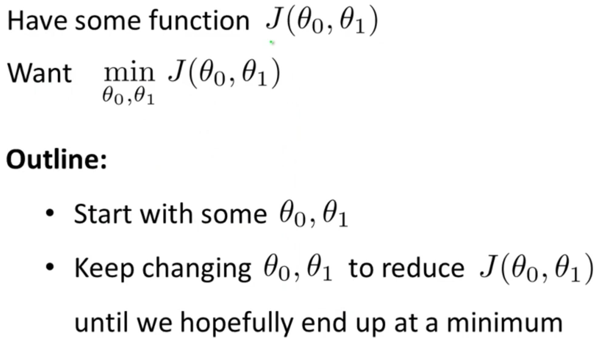
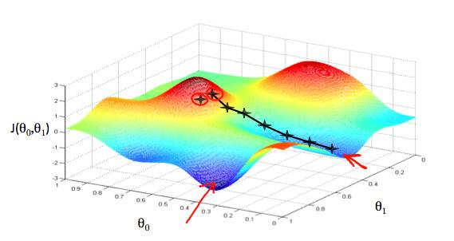

Coursera斯坦福大学机器学习（Machine Leaning）课程第一周课程笔记
given a training set, to learn a function h : X → Y so that h(x) is a “good” predictor for the corresponding value of y. For historical reasons, this function h is called a hypothesis.
监督学习模型
When the target variable that we’re trying to predict is continuous, such as in our housing example, we call the learning problem a regression problem. When y can take on only a small number of discrete values (such as if, given the living area, we wanted to predict if a dwelling is a house or an apartment, say), we call it a classification problem.
损失函数（Cost Function）
示例：线性回归-单变量
梯度下降法（Gradiant Discent）
梯度下降法求解线性回归问题，即求解最小化损失函数J


θ0 on the x axis and θ1 on the y axis, with the cost function on the vertical z axis. The points on our graph will be the result of the cost function using our hypothesis with those specific theta parameters.
- learning rate：The size of each step is determined by the parameter α,
- j=0,1 represents the feature index number.
- At each iteration j, one should simultaneously update the parameters θ1,θ2,…,θn. Updating a specific parameter prior to calculating another one on the j(th) iteration would yield to a wrong implementation.
Learning Rate
Debugging gradient descent. Make a plot with number of iterations on the x-axis. Now plot the cost function, J(θ) over the number of iterations of gradient descent. If J(θ) ever increases, then you probably need to decrease α.
Automatic convergence test. Declare convergence if J(θ) decreases by less than E in one iteration, where E is some small value such as 10−3. However in practice it’s difficult to choose this threshold value.
To summarize:
- If α is too small: slow convergence.
- If α is too large: may not decrease on every iteration and thus may not converge.
批量梯度下降（batch gradient descent）
凸二次函数（convex quadratic function）
特征选择和多项式回归
Features and Polynomial Regression
- 多个特征可合并为一个新特征
- 线性假设函数效果不好时，可以用平方，立方，平方根或其他形式来改变函数曲线
One important thing to keep in mind is, if you choose your features this way then feature scaling becomes very important.
eg. if x1 has range 1 - 1000 then range of x21 becomes 1 - 1000000 and that of x31 becomes 1 - 1000000000